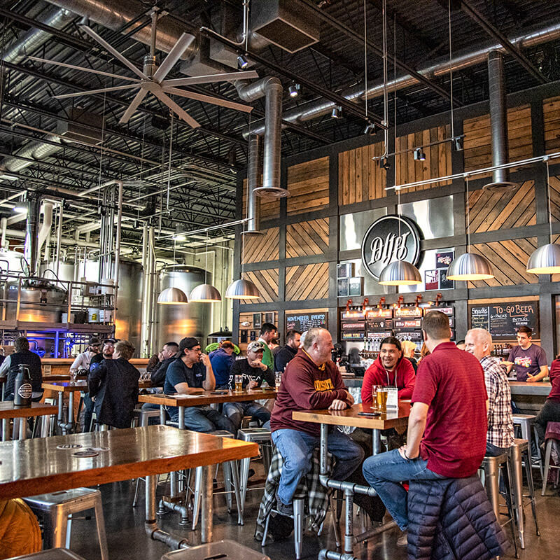

Discover Wisconsin's Local Flavors
Welcome to the Wisconsin Craft Beer & Cheese Trail! Explore a sample route connecting craft breweries and artisan creameries across Wisconsin.

What You Can Explore
- Craft breweries serving locally inspired beverages
- Creameries producing artisan cheese
- Food pairings featuring Wisconsin favorites
- Communities with their own food traditions
Start Planning Your Trail Adventure
- Review the trail stops and their signature items.
- Choose the cities you would like to explore.
- Build your visit plan using our planning form.
- Confirm business hours before traveling.
Enjoy the Trail Responsibly
Alcohol tastings are for adults age 21 and older. Arrange a designated driver or another safe ride if your visit includes drinking.
Creamery visits, food stops, and nonalcoholic options can also be part of your itinerary.